说明：数据管理
一、功能说明与适用场景
- 数据管理：主要做入引擎数据的初始化定义，包含hive表、MQ两种信息。需用户前置在万象上，将hive表/MQ(kafka/Mafka) 做Zeus读取授权，Zeus权限名称。注册后，可在Zeus近线引擎-画布、离线引擎-场景使用。其中mafka可不用申请
-
注册后，引用MQ/hive的作业（画布/场景）中的策略，将以初始化后的参数为执行输入信息key，因此数据映射过程需要用户关注：
- 若映射过程中 数据原始参数与平台参数命名、类型一致，则在后续策略中可以直接使用该命名；
- 若数据原始参数与平台参数名不一致，则后续策略中需要使用平台参数；
- 若数据原始参数与平台参数名一致、类型不一致，且在做映射时允许该情况，则后续策略中需要使用平台参数的类型；
- 为什么要做数据初始化？
a.以近线为例，Flink会自动退化到kryo序列化器，这种序列化器是非flink自身实现的且性能较差，导致作业序列化以及网络传输成本高，从而影响作业性能
b.需要做数据源与执行策略逻辑间的映射，若无该功能，需要上游业务配合，面向多风险域、多业务方存在冗余开发成本。
二、使用概览
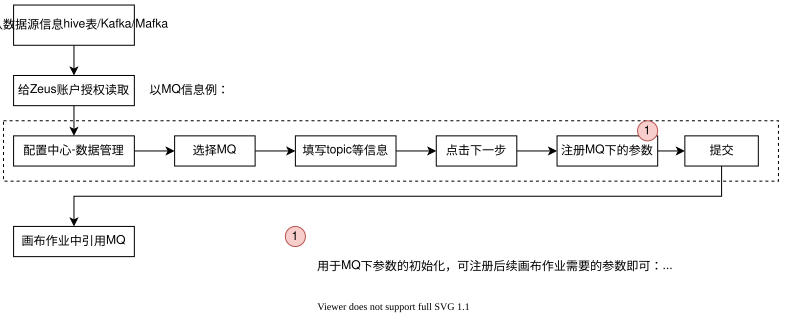
三、操作指南
|
说明（以MQ为例） |
页面 |
|---|---|
|
【入口】 配置中心-->数据管理-->新建MQ |
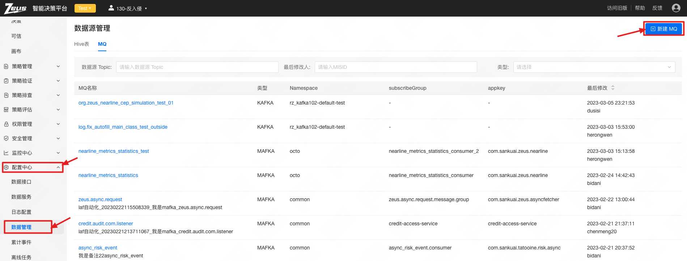 |
|
【新建】
|
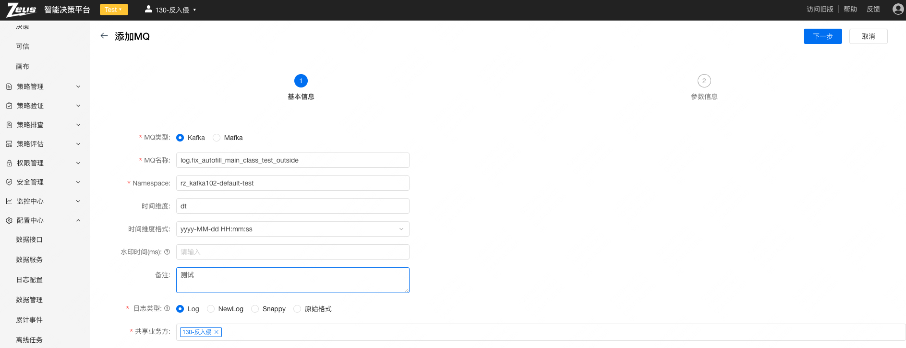 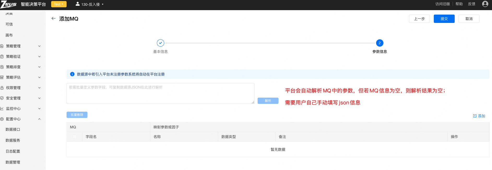 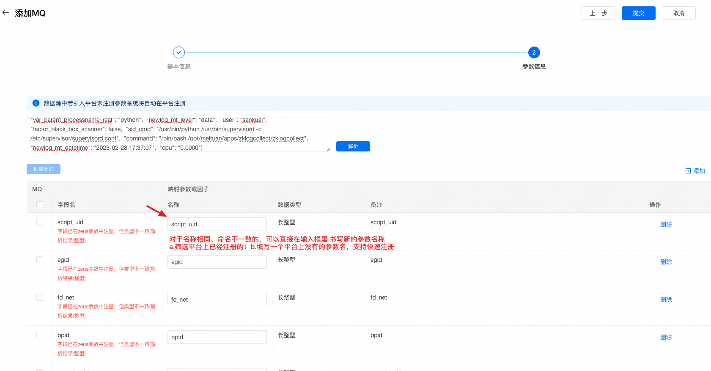 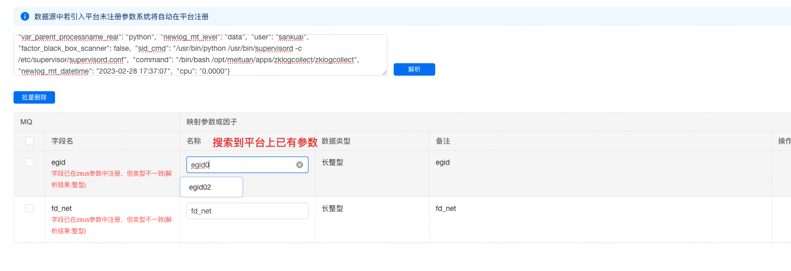 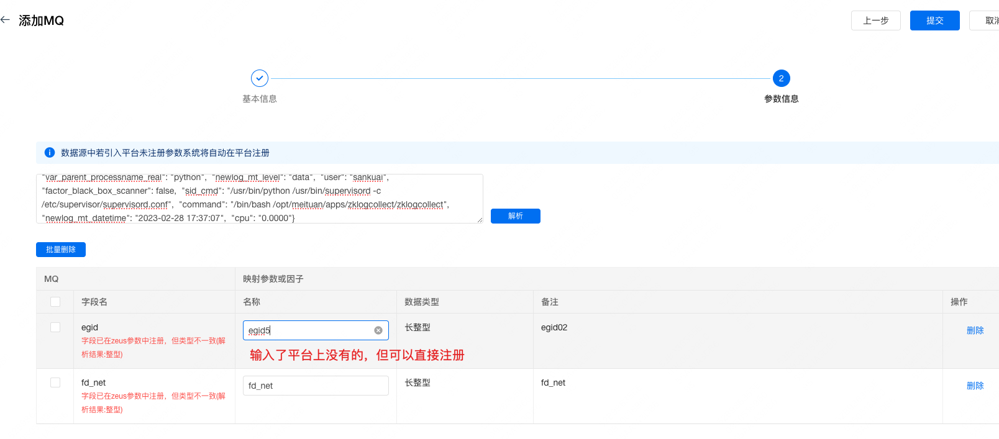 |
|
【查询】 支持Topic、最后修改人和类型的筛选 |
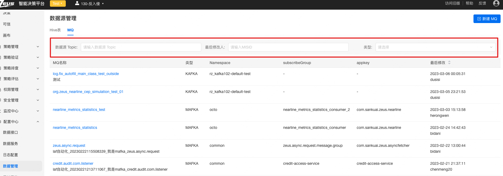 |
|
【编辑】
|
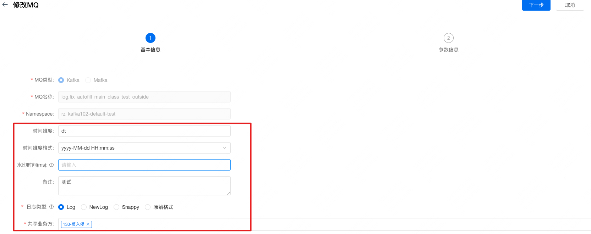 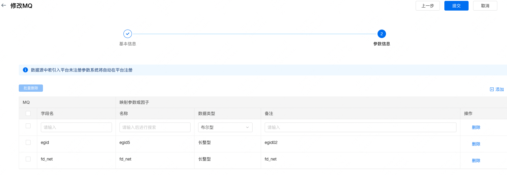 |
|
【查看引用】 引用信息查看入口：MQ详情-->被引用信息 |
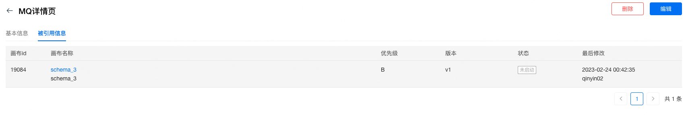 |
四、FAQ
Q1：除MQ注册外，是否支持批量参数注册？
A：支持，可使用参数批量注册
Q2：注册好的MQ如何与策略相关联，实现数据-->策略的关联？
A：截止2023Q1 目前只支持近线-画布作业的关联，在画布中引用kafka/Mafka组件即可；近线-场景规则作业可在「配置中心-->数据映射」中添加MQ与场景见的映射
Q3：注册好的hive表如何与策略相关联，实现数据-->策略的关联？
A：在「配置中心-->离线任务」中添加hive与场景见的映射
Q4: 怎么使用水印时间？
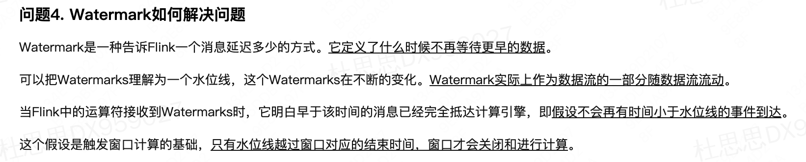
水印时间：即Watermark：对于窗口类的组件，Watermark可以理解成一个窗口延迟触发机制，用用来解决乱序问题的。我们可以设置Watermark的延时时长t，每次系统会校验已经到达的数据中最大的maxEventTime，然后认定eventTime小于maxEventTime - t的所有数据都已经到达，如果有窗口的停止时间等于maxEventTime – t，那么这个窗口被触发执行